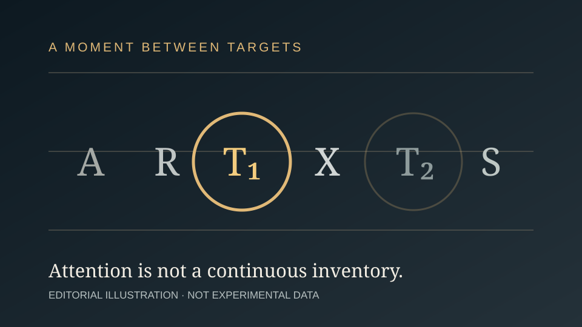

Final Vestige Studios / Tools Under Review / Buyer decision file
Twelve minutes is a convenient format. It isn't a scientific verdict.
Zen12 Premium is offered as a short-session meditation audio library. Before choosing it, find out what the seller actually includes, what independent evidence can and cannot say, and whether you need a paid recording at all.
UNPUBLISHED EDITORIAL PILOT · Not a testimonial · Not an activated affiliate offer · No verified checkout or commission
A useful experiment in restraint
The second letter slipped past.
In 1992, researchers flashed letters quickly enough that identifying one made some closely following letters harder to report. In 2007, an intensive meditation-training study reported smaller attentional-blink deficits in a specific laboratory task. Three months of substantial practice were involved. Neither experiment studied a Zen12 download.
If a seller promises that minutes of listening are equivalent to an hour of meditation, these papers are not a substitute for direct testing of that claim.
Research: 1992 RSVP experiment; 2007 meditation-training study; 2018 methodological cautions.
Optional original 42-second film treatment · not available for playback
Two targets. One narrow moment.

No autoplay, embedded player, remote asset, media download, or JavaScript. This is a poster and script concept only; any future encoded video would require an authorized licensed original track and browser/accessibility QA.
Read the complete 42-second narration transcript
[00–07] Two letters appear in a fast stream. You spot the first. You might miss the second.
[07–14] Researchers call it the attentional blink. Your eyes can remain open the whole time.
[14–21] In one study, intensive meditation training changed performance on this particular task.
[21–28] But the training lasted months. It was not a twelve-minute commercial recording.
[28–35] Before buying an audio program, separate its package features from demonstrated outcomes.
[35–42] Try the free Focus Fieldbook first. Read the evidence. Decide for yourself.
Caption plan: R383_FILM_CAPTIONS.vtt, six cues covering 00:00–00:42. Accessibility and actual playback have not been tested.
A decision grounded in what you need
Is a short guided audio library worth paying for?
If an organized listening routine helps you show up consistently, a structured library may appeal. That is a preference about convenience and presentation, not evidence that a particular recording changes brain function. If you already meditate comfortably with a free timer, the additional purchase may add little to your routine.
What this offer appears to sell
A sequence of downloadable sessions, a program structure, supporting guides and access terms described by the merchant. It is a paid audio package, not a supervised medical service or a proven substitute for extended meditation.
What the studies actually measure
Visual-target reports, brain-potential measures and, in other studies, self-reported attention. A positive training study cannot validate a different branded product merely because both use the word meditation.
Usefulness before purchase
Try twelve minutes that cost nothing.
- Two minutes: choose one finite task and write a one-sentence objective.
- Three minutes: work without editing your method; make a mark each time you notice an interruption.
- Two minutes: estimate how often you shifted, then compare with your marks.
- Three minutes: repeat with one simple change, such as silencing a nonessential notification.
- Two minutes: record the observable result and a separate possible explanation. Do not infer clinical improvement from one session.
This is a personal observation worksheet, **not** an RSVP test, medical intervention or claim that a twelve-minute method has special therapeutic powers.
Get the Free Seven Day Focus Fieldbook
Existing 52-page PDF via the one established Dispatch/Jetpack subscription. A paid offer is optional and no new signup form is created here.
Buyer checklist
Five questions the sales page cannot answer for you.
- Will I use it? If a simple free timer already works, what difference will a structured MP3 library make to your routine?
- What evidence is specific? Has this particular set of recordings been compared against a meaningful control for the outcome the seller advertises?
- Will I receive the stated package? Confirm exact files, compatible devices, delivery and whether bonuses or coaching access remain current.
- What will checkout really charge? Verify the final amount, currency, taxes, any additional offers and any renewal terms at the actual authorized checkout. An indexed public price is not proof.
- Can I actually use the guarantee? Read the applicable current refund terms and contact process; an advertised one-year guarantee is not independent confirmation of actual refunds.
What remains uncertain
The 2007 study examined intensive practice and an attentional-blink task; later trials have produced a mixture of subjective and objective results under different interventions and controls. They do not verify specific claims that this program reduces anxiety, treats insomnia, raises IQ, increases wealth, or compresses an hour of meditation into twelve minutes. Those product-specific efficacy claims are excluded.
The seller also offers other products, including Hypnosis Live and Brainwave Shots. Each requires its own verified package/claims review, not an interchangeable blanket endorsement. The seller's marketing urgency and universal guarantee language are not adopted.
Commercial decision · authorization pending
Read the evidence. Choose only when the offer can be verified.
Affiliate disclosure: If an earning link is later authorized here and you make a purchase through it, Final Vestige may earn a commission at no additional cost to you. No affiliate link is active on this draft page.
Affiliate acceptance, permitted channel terms, issued partner link, referred checkout and returns have not been confirmed. This button cannot initiate a purchase.
Buying is not required to read our reporting or to use the existing free Fieldbook. We do not claim to have used or personally tested this product.
Source trail
Raymond et al. 1992, visual attentional blink · Slagter et al. 2007, intensive training and attention · 2020 randomized attention-control trial · Van Dam et al. 2018, methodological cautions · FTC health-claim substantiation · FTC endorsement disclosures.
Seller package source (reference only, not an activated commercial link): Zen12 official product site, checked November 14, 2026; see the separate claim-and-source matrix. Affiliate rights remain unverified.